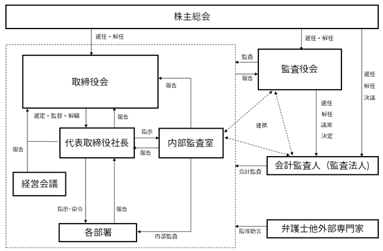

該当事項はありません。
該当事項はありません。
③ 【その他の新株予約権等の状況】
該当事項はありません。
該当事項はありません。
(注) １．有償一般募集(ブックビルディング方式による募集)
発行価格 1,280円
引受価額 1,177.60円
資本組入額 588.80円
２. 2023年４月25日開催の定時株主総会に基づき、財務内容の健全化を図るために行った減資であります。
なお、資本金の減資割合は、31.3％であります。
３. 譲渡制限付株式報酬としての新株式の発行によるものであります。
発行価額 1,300円00銭
資本組入額 650円00銭
割当先 当社の取締役（社外取締役を除く）３名
2024年１月31日現在
（注）「単元未満株式」欄の普通株式には、当社所有の自己株式87株が含まれております。
該当事項はありません。
会社法第155条第７号による普通株式の取得
該当事項はありません。
該当事項はありません。
(注) 当期間における取得自己株式には、2024年４月１日から有価証券報告書提出日までの単元未満株式の買取りによる株式数は含めておりません。
(注) 当期間における保有自己株式には、2024年４月１日から有価証券報告書提出日までの単元未満株式の買取り及び売渡による株式数は含めておりません。
当社は、剰余金の処分については、株主への利益還元を図り、かつ将来の事業展開及び財務体質の充実に必要な内部留保を確保するため、業績に対応した配当を行うことを基本方針としております。
当社の剰余金の配当は年１回の期末配当を基本として考えており、第21期の事業年度の配当につきましては、1株当たり10円としております。この結果、第21期事業年度の配当性向は20.8％となっております。
また、内部留保資金の使途につきましては、日々刻々と変化する事業環境に対応し得る企業体質の強化を図るとともに、持続的な成長を実現するための研究開発や競争力の強化及び市場のニーズに応える体制の整備及び確立に向け有効活用してまいる所存であります。
なお、当社は、取締役会の決議によって、会社法第454条第５項に規定する中間配当を行うことができる旨を定款で定めており、配当の決定機関は中間配当が取締役会、期末配当は株主総会であります。
当社は、「健康第一」「安全第一」「家庭第一」を基本理念としコーポレート・ガバナンスの基本的な目的を企業価値の安定的な増大と株主重視の立場に立って経営の健全性の確保と透明性を高めることであると認識しております。そのために、財務の健全性を追求すること、タイムリーディスクロージャーに対応した開示体制を構築すること、取締役及び監査役がそれぞれ独立性を保ち業務執行及び監査責任を果たすことを経営の最重要方針としております。また、コーポレート・ガバナンスの効果を上げるため、内部統制システム及び管理部門の強化を推進し、徹底したコンプライアンス重視の意識の強化とその定着を全社的に推進してまいります。
イ．取締役会
当社の取締役会は、代表取締役社長(松藤展和)と取締役２名（川口宏二、和田進一）、社外取締役２名（桑田豪、大内祐）の計５名で構成されており、会社の経営方針、経営戦略、事業計画、重要な財産の取得及び処分、重要な組織及び人事に関する意思決定機関として、月１回の定例取締役会の開催に加え、重要案件が生じたときに臨時取締役会を都度開催しております。
ロ．監査役会
当社の監査役会は、常勤監査役１名(飯塚朋子)及び非常勤監査役２名(江間哲郎、俣野和仁)で構成されており、全員が社外監査役であります。監査役会は、毎月１回開催するとともに、必要に応じて臨時監査役会を開催し、監査計画の策定、監査実施状況及び監査結果等の検討等、監査役相互間の情報共有を図っております。
また、監査役は取締役会その他重要な会議に参加するほか、監査計画に基づき重要書類の閲覧、役職員への質問等の監査手続を通して、経営に対する適正な監視を行っており、内部監査室及び会計監査人と連携して適正な監査の実施に努めております。
ハ．経営会議
代表取締役社長(松藤展和)、各本部本部長２名(川口宏二、和田進一)及び各部部長３名をメンバーとする経営会議を毎月定例会議１回、その他必要に応じ臨時会議を都度実施しております。取締役会の指揮により効率的に事業を執行するとともに、関連する主要議題について幅広く協議し、必要に応じて取締役会へ方針や施策等を具申しております。
取締役会による経営の意思決定機能及び業務執行の監督機能と経営会議メンバーによる業務執行機能を明確に分離し、機動的で迅速な意思決定と効率的な業務執行の体制を構築しております。
当社のコーポレート・ガバナンス体制の模式図は、次のとおりです。
当社の経営組織及びコーポレート・ガバナンス体制の模式図

当社の取締役は、取締役５名中２名が社外取締役であります。社外取締役を取締役会の議長とし、各業務執行取締役から毎月１回以上の取締役会への報告を通じて、業務執行における適正性及び効率性の確保に努め、相互に監督がなされる体制となっております。
また、当社の監査役会は３名の社外監査役で構成されており、各監査役は内部監査室や会計監査人と連携し、取締役の職務執行状況を厳正にチェックしております。
上記のことから経営監視機能は十分に機能する体制が整っていると判断し、当該体制を採用しております。
③ 企業統治に関するその他の事項
当社は、内部統制システム整備に関する基本方針について、以下のとおり定めております。
１．取締役の職務の執行に係る情報の保存及び管理に関する体制
(1) 取締役会議事録、その他取締役の職務の執行に係る情報は、文書又は電磁的媒体に記録し、文書管理規程等の社内諸規程に基づき、適切に保存及び管理する。
(2) 文書管理部署たる管理部は、取締役の職務の執行に必要な文書などの情報については、常時情報開示・提供できるよう検索可能な方法で保存・管理する。
２．損失の危険の管理に関する規程その他の体制
当社は、取締役会がリスク管理体制を構築する責任と権限を有し、これに従いリスク管理に係る「リスクマネジメント規程」、「コンプライアンス規程」を制定し、多様なリスクを可能な限り未然に防止し、危機発生時には企業価値の毀損を極小化するための体制を整備する。経営会議がリスク管理活動を統轄する。
３．取締役の職務の執行が効率的に行われることを確保するための体制
(1) 重要な職務執行を適切かつ効率的に行うため経営会議を設置し、取締役会の意思決定に資するため、取締役会付議事項の事前検討を行うとともに、取締役会が決定した方針及び指示を社内に伝達する。
(2) 職務の執行を効率的に行うため、「職務権限規程」、「職務分掌規程」等の社内諸規程に基づき、権限の委譲を行い、各レベルの責任者が意思決定ルールに則り業務を分担する。
４．取締役、使用人の職務の執行が法令及び定款に適合することを確保するための体制
(1) 役職員が共有すべき「経営理念」、「経営方針」、「クレド」を制定し、法令等の遵守の重要性につき繰り返し情報発信することにより、その周知徹底を図る。
(2) 取締役会は、社外取締役を含む取締役で構成し、法令、定款及び「取締役会規程」を始めとする社内諸規程に従い、重要事項を決定するとともに、法令等遵守の状況に関する報告体制を確立する。
(3) 「リスクマネジメント規程」、「コンプライアンス規程」を定め、管理部を統括部署として、経営会議が適切に運用することにより危機管理及びコンプライアンスの徹底と社会的信用の向上を図る。
(4) 社長直轄の内部監査室を設置し、「内部監査規程」に基づき業務全般に関し、法令、定款および社内規定の遵守状況、職務執行の手続きおよび内容の妥当性等につき、定期的に内部監査を実施する。
(5) 財務に関する社内規程を整備し、財務報告の適正性、信頼性を確保するための体制の充実を図る。
(6) 社会の秩序や安全に脅威を与える反社会的勢力とは一切の関係を遮断するとともに、これら反社会的勢力に対しては、警察などの外部専門機関と密接に連携し、全社を挙げて毅然とした態度で対応する。全役職員の行動規範として「反社会的勢力対応規程」を制定して徹底を図る。
(7) 法令・定款・社内諸規定に違反する行為を発見して是正することを目的に、社内に内部通報窓口を設けるとともに、社外窓口も設置する。
５．監査役がその職務を補助すべき使用人を置くことを求めた場合における当該使用人に関する事項及びその使用人の取締役からの独立性に関する事項
(1) 監査役の職務を補助すべき使用人は、必要に応じてその人員を確保する。
(2) 当該使用人が監査役の職務を補助すべき期間中の指揮権は、監査役に委嘱されたものとして、取締役の指揮命令は受けないものとし、その期間中の当該使用人の人事評価については、監査役が行う。
６．監査役を補助すべき使用人に対する指示の実効性の確保に関する事項
監査役付に対する指示の実効性を確保するため、監査役は当該使用人の人事異動、人事評価、懲戒処分等に対して同意権を有する。
７．取締役及び使用人が監査役に報告するための体制
(1) 取締役及び使用人は、監査役会の定めに従い、各監査役の要請に応じて必要な報告及び情報提供を行う。
(2) 監査役への報告・情報提供は以下のとおりとする。
・監査役から要請のあった全ての会計に関する情報
・監査役から要請のあった全ての業務に関する情報
(3) 取締役及び使用人は、職務執行に関して法令及び定款に違反する、またはそのおそれがある事項、会社に著しい損害を及ぼす虞のある事項、会社の業務又は業績に影響を与える重要な事項等を発見し次第、遅滞なく監査役に報告することとする。
８．当社の監査役へ報告した者が当該報告をしたことを理由として不利な取り扱いを受けないことを確保するための体制
当社は、内部通報をしたことを理由として通報者に対し不利益な取り扱いを行うことを禁止し、その旨を当社内の取締役及び役職者に徹底することとする。
９．監査役の職務の執行について生ずる費用の前払い又は償還手続その他の当該職務の執行について生ずる費用又は債務の処理に係わる方針に関する事項
当社は、監査役がその職務の執行のために生じる合理的な費用の前払い又は償還等の請求をしたときは、速やかに当該費用又は債務を処理することにする。
10．その他監査役の監査が実効的に行われることを確保するための体制
(1) 代表取締役社長及び内部監査室は、監査役と定期的に意見交換を行う。
(2) 監査役は、取締役会を始め、経営会議等重要な会議に出席することにより、 重要な報告を受ける体制とする。
(3) 監査役会は定期的に会計監査人から監査の状況報告を受けることにより、監査環境を整備し監査の有効性を確保する
当社の取締役は、10名以内とする旨を定款に定めております。
当社は、取締役及び監査役の選任決議要件について、議決権を行使することができる株主の議決権の３分の１以上を有する株主が出席し、その議決権の過半数をもって行う旨を定款に定めております。また、取締役の選任決議は、累積投票によらない旨を定款に定めております。
当社は、取締役会の決議によって毎年７月31日を基準日として、中間配当をする事ができる旨を定款で定めております。これは、株主への機動的な利益還元を可能にするためであります。
当社は、会社法第309条第２項に定める株主総会の特別決議について、議決権を行使することができる株主の議決権の３分の１以上を有する株主が出席し、その議決権の３分の２以上をもって行う旨を定款に定めております。これは、株主総会における特別決議の定足数を緩和することにより、株主総会の円滑な運営を行うことを目的とするものであります。
当社は、会社法第426条第１項の規定により、取締役会の決議をもって、同法第423条第１項の取締役及び監査役(取締役及び監査役であった者を含む)の責任を法令の限度において免除することができる旨を定款に定めております。
当該責任免除が認められるのは、当該役員が責任の原因となった職務の遂行において善意かつ重大な過失がないときに限られます。
これは、取締役及び監査役が、期待される役割を十分に発揮すること等を目的とするものであります。
当社は、会社法第430条の３第１項に規定する役員等賠償責任保険契約を保険会社との間で締結しております。当該保険契約の被保険者の範囲は当社の取締役及び監査役全員であり、保険料は全額当社が負担しております。当該保険契約は、被保険者である取締役及び監査役がその職務に関して責任を負うこと、または、当該責任の追及に係る請求を受けることによって生ずることのある損害について填補することとされています。ただし、法令違反の行為であることを認識して行った行為に起因して生じた損害は填補されないなど一定の免責事由があります。
当社は、会社法第427条第１項の規定により、取締役(業務執行取締役等であるものを除く。)及び監査役との間で、同法第423条第１項の責任を限定する契約を締結しております。当該契約に基づく責任の限度額は、法令が規定する額としております。当該役員が責任の原因となった職務の遂行において善意かつ重大な過失がないときに限られます。
当社は、会社法第165条第２項の規定により、取締役会の決議をもって自己株式を取得することができる旨を定款に定めております。これは、経営環境の変化に対応した機動的な資本政策の遂行を可能とするためであります。
⑫ 取締役会の活動状況
当事業年度において当社は取締役会を14回開催しており、個々の取締役の出席状況については次のとおりであります。
（注）取締役大内祐氏は2023年４月25日開催の第20回定時株主総会において新たに選任され就任いたしました。
取締役会における具体的な検討内容として、当社の経営に関する事項、重要な業務執行に関する事項等を決議、報告等を受けております。
主な議案・報告として、経営方針・戦略、年度経営計画及び年度予算、重要な事業プロジェクト、財務報告等に関する事項、組織・人事・規程に関する事項等であります。
男性
(注) １．取締役 桑田豪氏、大内祐氏は、会社法第２条第15号に定める社外取締役であります。
２．監査役 飯塚朋子氏、江間哲郎氏及び俣野和仁氏は、会社法第２条第16号に定める社外監査役であります。
３．取締役の任期は2023年４月25日の定時株主総会終結の時から2025年１月期に係る定時株主総会終結の時までであります。
４．監査役の任期は2021年４月26日の定時株主総会終結の時から2025年１月期に係る定時株主総会終結の時までであります。
５．代表取締役社長松藤展和の所有株式数には、同氏の資産管理会社であるアクアプレコン株式会社が所有する株式数を含めた実質株式数で記載しております。
本書提出日現在において、当社は社外取締役を２名、社外監査役を３名選任しており、経営の意思決定機能を持つ取締役会に対し牽制及び監視機能を強化しております。
社外取締役桑田豪氏は、建築設計の専門家としての経験及び知見を有しており、客観的かつ公正な立場から経営全般の監視と有効な助言を期待し選任しております。なお、同氏は当社株式を12,000株所有しておりますが、それ以外には当社との間に人的関係、資本的関係及び取引関係その他利害関係は有しておりません。
社外取締役大内祐氏は、公認会計士及び税理士としての専門的な知識、経験を有しており、客観的かつ公正な立場から経営全般の監視と有効な助言を期待し選任しております。同氏は当社との間に人的関係、資本的関係及び取引関係その他利害関係は有しておりません。
社外監査役飯塚朋子氏は、司法書士(有資格者)としての経験及び知見を有しており、客観的・専門的な視点からの当社の監査役体制の強化を期待し選任しております。なお、同氏は当社株式を16,000株所有しておりますが、それ以外には当社との間に人的関係、資本的関係及び取引関係その他利害関係は有しておりません。
社外監査役江間哲郎氏は、会計税務の専門家としての経験及び知見を有しており、客観的・専門的な視点からの当社の監査役体制の強化を期待し選任しております。同氏は当社と税務顧問契約を締結している森田会計事務所に所属しており、2015年１月まで同事務所において当社を担当しておりましたが、2015年２月以降は同事務所では同氏以外の者が当社を担当しております。また、同氏は当社株式を12,000株所有しております。これら以外には、同氏は当社との間に人的関係、資本的関係及び取引関係その他利害関係は有しておりません。
社外監査役俣野和仁氏は、公認会計士としての経験及び知見を有しており、客観的・専門的な視点からの当社の監査役体制の強化を期待し選任しております。同氏は当社との間に人的関係、資本的関係及び取引関係その他利害関係は有しておりません。
当社は、社外取締役及び社外監査役を選任するための独立性に関する基準又は方針を定めてはおりませんが、選任の際には、経歴等を踏まえて個別に判断し、客観的に独立性の高い社外役員を選任しております。
社外取締役及び社外監査役は、毎月開催する取締役会に出席し、客観的見地から適宜、質問、助言・発言等を行い、ガバナンスの強化を図っております。また、取締役会議案、報告事項については、事前に配布し、要望に応じ、説明や資料等の提供ができる体制としております。
社外監査役は、内部監査室長より適宜、内部監査状況について報告を受けております。また、監査法人を含む三者ミーティングを定期的に開催しております。
(３) 【監査の状況】
監査役監査は３名の監査役で行っております。当社の監査役は財務・会計・企業法務等相当程度の知見を有する者をそれぞれ選任し、取締役の法令・定款遵守状況を把握し、業務監査及び会計監査が有効に実施されるよう努めております。
なお、監査役飯塚朋子氏は、司法書士(有資格者)として企業法務に精通しており、専門的な知見を有するものであります。監査役江間哲郎氏は、会計事務所において長きにわたって会計コンサルタント業務に従事しており、財務及び会計に関する相当程度の知見を有するものであります。監査役俣野和仁氏は、公認会計士の資格を有しており、財務及び会計に関する相当程度の知見を有するものであります。
当事業年度において当社は監査役会を13回開催しており、個々の監査役の出席状況については次のとおりであります。
監査役会における具体的な検討内容として、監査方針・監査計画・重点監査項目の策定、取締役の職務執行の適正性並びに会計監査人の選解任・報酬妥当性・監査の方法及び結果の相当性等であります。
常勤監査役は、常勤者として、監査環境の整備及び社内情報の収集に積極的に努め、日常的かつ継続的に監査活動を行うとともに、監査役会を運営し、職務上知りえた情報を監査役会及び社外役員連絡会にて社外監査役及び社外取締役と共有しております。
常勤及び非常勤監査役は、監査役会が定めた監査計画、業務分担等に基づき、日々の監査役監査を実施し、監査役会で監査実施状況及び監査結果等の検討、情報共有を図り、取締役会で当該監査結果を共有するほか、随時代表取締役や取締役との面談、会計監査人及び内部監査室との意見交換等を行い、専門分野の知見を活かした提言を行っております。
内部監査に関しては、内部監査室を設置しコンプライアンスやリスク管理体制を監査する内部監査人２名を配置し、あらかじめ定められた監査計画に基づき、全社業務全般を対象と範囲として監査し、結果を代表取締役社長に報告しております。
内部監査及び監査役監査は、それぞれの監査が連携・相互補完し合うことで企業経営の健全性をチェックする機能を担っており、毎月監査役・内部監査室連絡会を開催し、監査計画や監査結果の共有、実査同行及び意見交換を行い、相互連携を図っております。会計監査人との連携状況に関しては、監査役及び内部監査人が参加の上、三様監査連絡会を定期的に開催し、適宜情報交換、意見交換等を実施しております。
また、内部監査室長は、代表取締役及び各取締役が参加する取締役会に毎回参加しており、取締役会を通して内部監査状況や課題を経営トップ層と共有し、業務改善及び不正防止に向け客観的な立場で助言・勧告を行う体制を整備しております。
みおぎ監査法人
４年間
指定社員 業務執行社員 山田 将文
指定社員 業務執行社員 高野 将一
公認会計士 ５名であります。
当社の監査法人の選定及び評価にあたっては、監査法人の概要、品質管理体制、独立性、監査実施体制等の資料を入手し、面談、質問等を行った上で総合的に判断しております。
当社がみおぎ監査法人を選定した理由は、公認会計士としての専門性、独立性及び適正性を有しており、監査品質を確保する体制を備えていると判断したことであります。
監査役会は、会計監査人の職務の執行に支障がある場合等必要があると判断した場合は、株主総会に提出する会計監査人の解任又は不再任に関する議案の内容を決定いたします。
また、会計監査人が会社法第340条第1項に定める項目に該当すると認められる場合は、監査役全員の同意に基づき監査役会が会計監査人を解任いたします。
当社の監査役及び監査役会は、監査法人に対して評価を行っております。監査法人が独立の立場を保持し、かつ適正な監査を実施しているかを監視及び検証するとともに、監査法人からその職務の執行状況について報告を受け、必要に応じて説明を求めております。その結果、監査法人の体制及び監査手続等は相当であると評価しております。
当社は、会計監査人に対して、公認会計士法第２条第１項の業務以外の業務である、コンフォートレター作成業務についての対価を支払っております。
該当事項はありません。
該当事項はありません。
当社の事業規模等を勘案して監査報酬額を決定しております。
ｅ 監査役会が会計監査人の報酬等に同意した理由
当社監査役会は、日本監査役協会が公表する「会計監査人との連携に関する実務指針」を踏まえ、会計監査人の監査計画の内容、会計監査の職務執行状況及び報酬見積の算出根拠などを確認し、検討した結果、会計監査人の報酬等につき、会社法第399条第１項の同意を行っております。
(４) 【役員の報酬等】
当社の役員の報酬等の額又はその算定方法の決定に関する方針は、当社「役員報酬規程」に定めております。また、報酬額につきましては「役員報酬規程」に基づき、2018年７月４日開催の臨時株主総会において取締役の報酬額を年額金200,000千円以内、また監査役の報酬額を年額金50,000千円以内と決議しております。本書提出日現在において、これらの支給枠に基づく報酬等の支給対象となる役員は、取締役５名、監査役３名であります。
また、当社は、当社取締役(社外取締役を除く)に対して、当社企業価値の持続的な向上を図るインセンティブを与えるとともに、中長期的な企業価値向上に向けた取り組みや株主の皆様との一層の価値共有を進めることを目的として2023年４月25日開催の第20回定時株主総会において、譲渡制限付株式報酬制度の導入を決議しております。
その総額は、年額25,000千円以内とし、各対象取締役への具体的な支給時期及び配分については、取締役会において決定し、当社が新たに発行または処分する普通株式の総数は、年20,000株以内とし、その１株当たりの払込金額は、各取締役会決議の日の前営業日における名古屋証券取引所における当社の普通株式の終値(同日に取引が成立していない場合は、それに先立つ直近取引日の終値)を基礎として当該普通株式を引き受ける対象取締役に特に有利な金額とならない範囲において、取締役会において決定します。
役員区分ごとの報酬等の額に関する考え方及び算定方法の決定に関する事項は、以下のとおりです。
取締役の報酬等につきましては、株主総会において決議された報酬総額の限度内で、職責や役位に応じて支給することとしております。
取締役の報酬等の額またはその算定方法は、業績及び今後の見通し並びに各取締役の業務執行状況を勘案し、配分方法の取り扱いを取締役会で協議した上で、決定しております。当事業年度におきましては、2023年４月25日開催の臨時取締役会にて、2023年５月１日からの各取締役報酬額につき、各取締役の担当に照らして、全社及び部門別の業績達成度と役割達成度を俯瞰的に評価できることができると判断し、代表取締役社長松藤展和に一任することを決議し、決定いたしました。
また、当社は、社外取締役を除く取締役に対し、譲渡制限付株式報酬制度の導入しております。
当事業年度における具体的な支給時期及び配分につきましては、2023年５月19日開催の取締役会にて協議し、決定しております。
監査役の報酬等につきましては、株主総会において決議された報酬総額の限度内で、常勤監査役と非常勤監査役の別、業務の分担等を勘案し、監査役の協議により決定しております。当事業年度におきましては、2023年４月25日に監査役の協議により決定しております。
(注) 役員ごとの報酬等の総額につきましては、１億円以上を支給している役員は存在しないため、記載を省略しております。
(５) 【株式の保有状況】
① 投資株式の区分の基準及び考え方
当社は、保有目的が株式の価値の変動又は株式に係る配当によって利益を得ることであるものを純投資目的である投資株式とし、それ以外のものを純投資目的以外の目的である投資株式と区分しております。
② 保有目的が純投資目的以外の目的である投資株式
該当事項はありません。